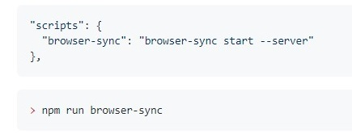
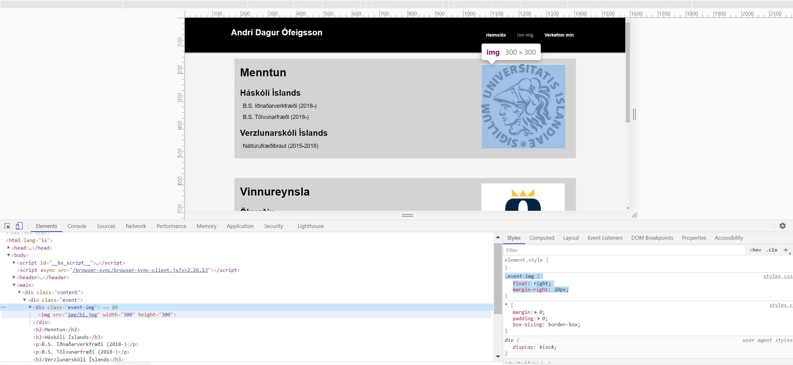
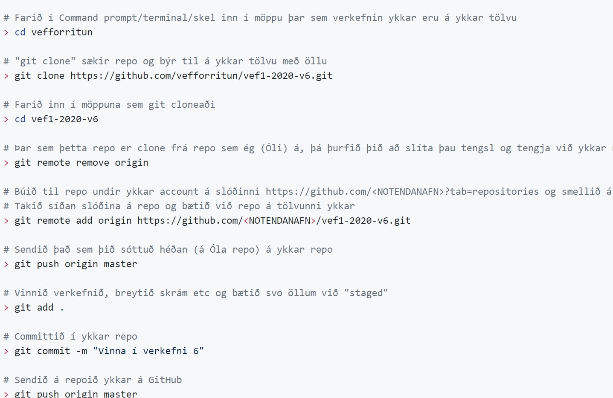

Búa til heimasíðu
Fyrstu skrefin
Ég byrjaði að kynna mér verkefnið og horfa á lýsingar myndböndin sem voru gefin með verkefninu. Sá þar að verkefnið fólst helst í því að nota HTML og CSS til þess að búa til vefsíðu. Heppilegt var að ég hef lokið áfanga sem heitir vefforritun sem fjallar mest megnis um HTML og CSS þannig ég gat nýtt mér ákveðna reynslu úr þeim áfanga. Þannig í staðinn fyrir að velja eitthvað ákveðið form sem var gefið með verkefninu var ákveðið að gera vefsíðuna frá grunni.
Fyrst var búið til tómt html skjal og gefið það nafninu index.html. Svo var sett upp browser-sync sem er notað til þess að sjá svona live breytingar á verkefninu. Til þess að gera það þarf að nota terminal glugga og fara í möppuna þar sem verkefnið er og byrja að slá inn "npm init", svara ákveðnum spurningum sem koma og eftir það þá er hægt að slá inn skipunina "npm install browser-sync --save-dev". Við þetta ættu að birtast tvö ný skjöl í möppu þinni þá package.json og package-lock.json. í package.json þarf að bæta við einni línu sem sést hér fyrir neðan.

Þegar það er komið er hægt að gera skipunina "npm run browser-sync" eins og sést hér fyrir ofan og þá ætti að opnast gluggi í chrome þar sem hægt er að fylgjast með live breytingum á verkefninu.
Gerð vefsíðunnar
Ákveðið var að byrja á því að búa til heimasíðuna, index.html. Best er að gera fyrst kóða fyrir html og byrjað var að búa til header á vefsíðuna. Þegar html kóðinn er kominn þá er farið í að útlitsmóta hann með CSS kóða. Notað var browser-sync til þess að sjá hvernig síðan breytist við ákveðnum CSS kóðum. Mikið sem var líka notað var ef það er hægri smellt á browser-sync síðuna þá kemur upp valmöguleiki sem heitir Inspect og þar er hægt að breyta CSS kóðanum og útlistmóta síðuna eins og hentar. Passa þarf að færa kóðan sem var gerður í Inspect yfir í styles.css, þar sem allur CSS kóðinn okkar er.
Hér fyrir neðan má smá mynd af hvernig Inspect virkar og þarna var ég að reyna láta myndina koma á réttan stað. Þá breyti ég kóðanum sem er highlight-aður niðri hægra megin.

Eftir að haus vefsíðunnar var orðinn flottur þá var gert forsíðuna og síðan fót vefsíðunnar. En alltaf var notað sömu aðferð við gerð hvern hlut af síðunni, html fyrst svo unnið í css með hjálp browser-sync. Þegar heimasíðan var klár var farið í að gera síðuna "um mig". Lýtið sem þurfti að breyta html-inu og css við gerð næstu síðu því það var nánast notað það sama fyrir hverja síðu. Eina sem þurfti að kóða var það sem var inni á hverri síðu.
Hér er hægt að sjá allan kóðan sem var gerður við verkefnið.
Setja síðuna á GitHub
Loka skrefið var að setja síðuna á GitHub. Skoðað var myndbandið sem var gefið fyrir verkefnið sem sýndi hvernig átti að setja verkefnið á GitHub en aðeins öðruvísi aðferð var kennd í vefforritun þannig ég nýtti mér hana, hér fyrir neðan má sjá leiðbeiningar fyrir hana.

Það sem mætti gera betur
Hægt væri að bæta við kóða til þess að gera síðuna mobile, þannig að hún yrði snyrtileg í gegnum síman. Við það þarf að búa til grid. Einnig væri hægt að snyrta aðeins kóðan sjálfan þá html-ið og css-ið, þá taka nokkrar breytur saman o.s.frv.